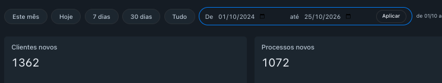
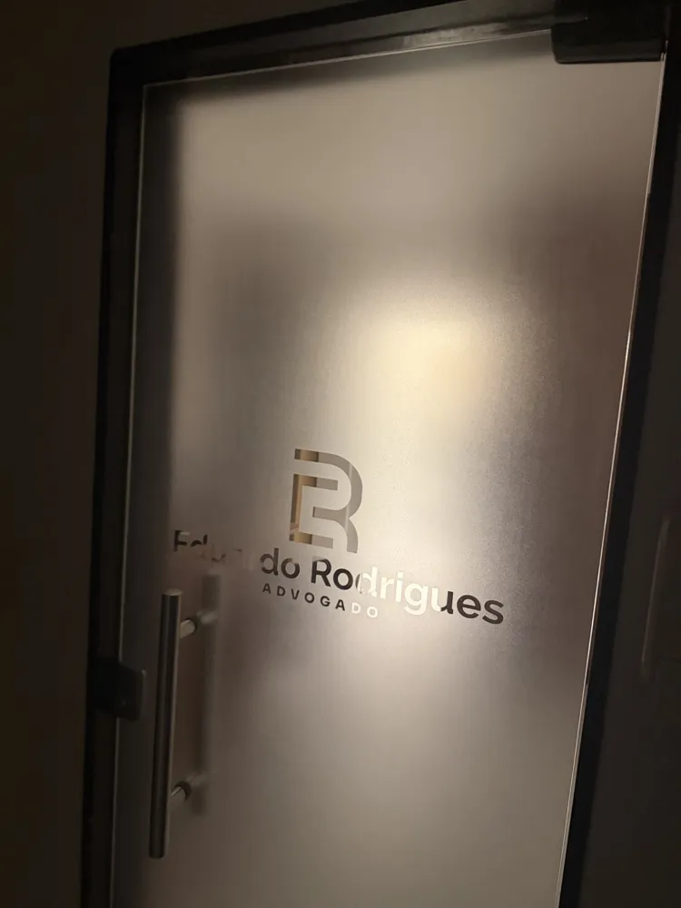
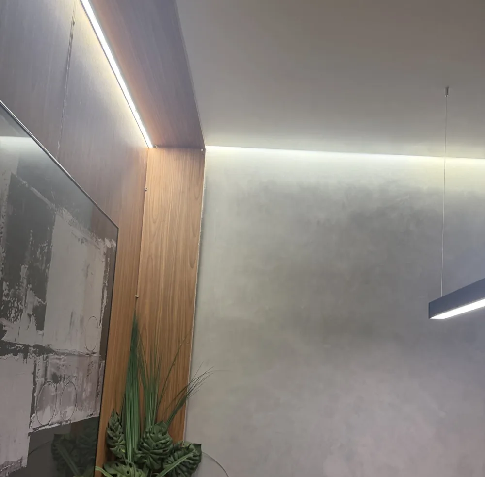
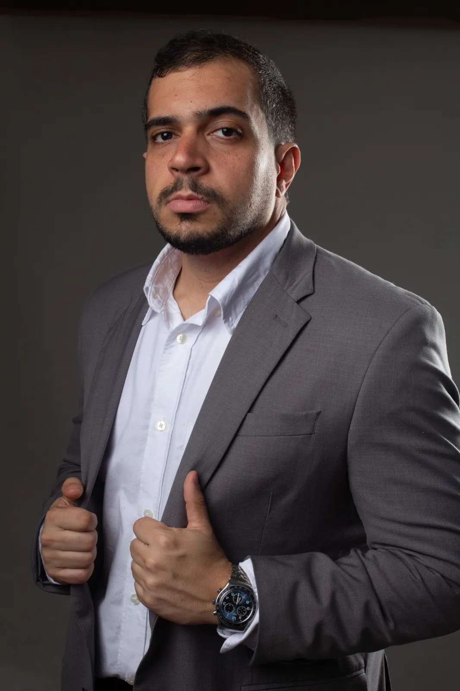
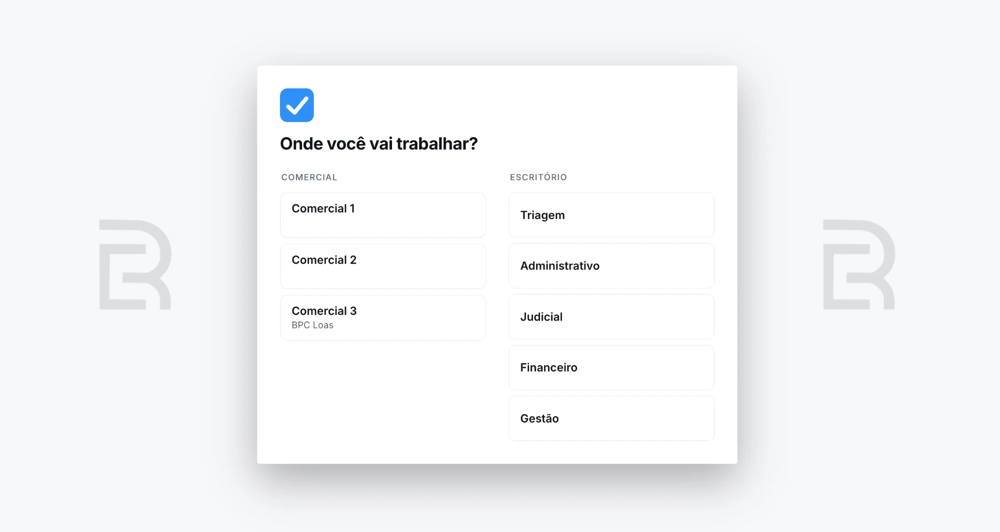
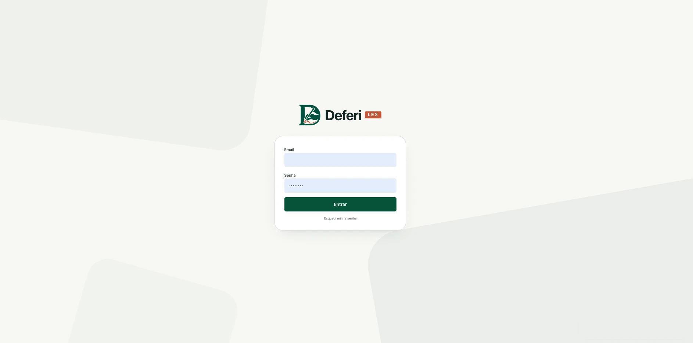
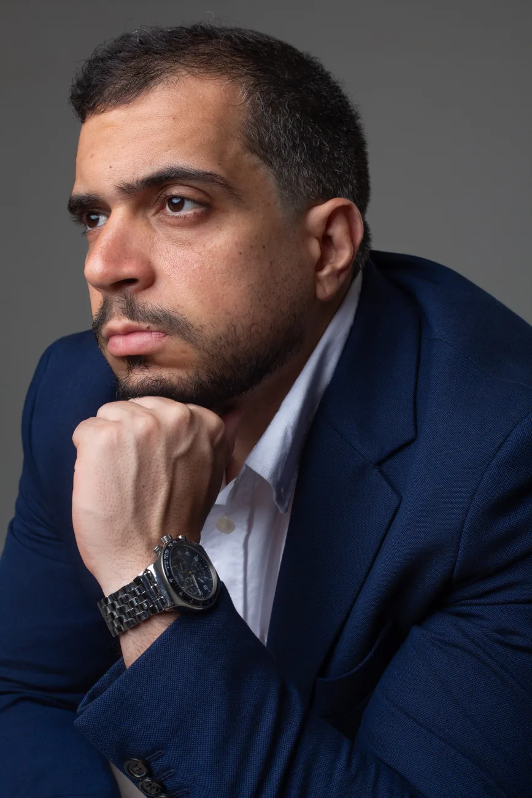
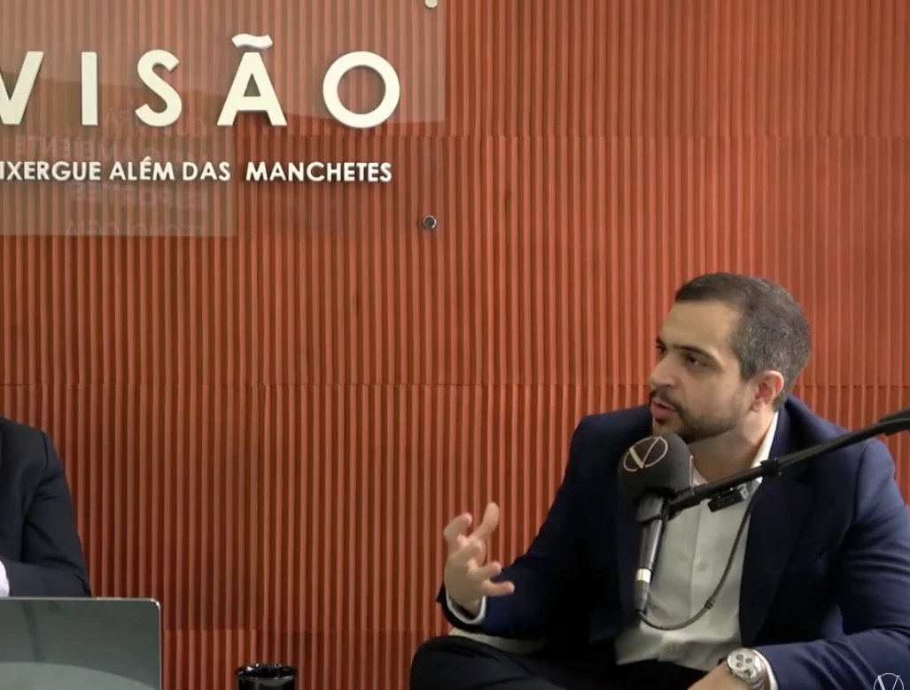
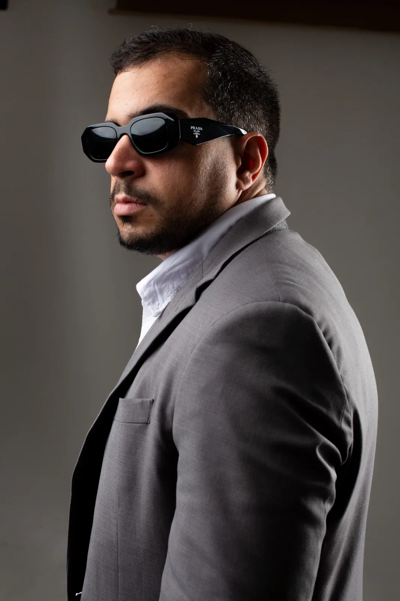

Marketing
Como eu apresento o escritório pro público que quero atender, e o que a pessoa precisa entender antes de puxar conversa.

Marketing, tráfego pago, vendas e automação funcionando juntos no escritório, pra uma equipe enxuta dar conta de muito trabalho.
Sou Eduardo Rodrigues, advogado previdenciarista apaixonado por tecnologia.
Quero minha vaga na imersãoOnline e ao vivo, terça 24 e quarta 25 de novembro, das 20h às 21h, por R$ 47. Não tem slide. Você acompanha o escritório funcionando na minha tela. No fim da segunda noite eu abro a mentoria pra quem quiser continuar comigo.
Como eu uso o Claude Code pra automatizar tarefas e criar processos, modelos de documento e mini sistemas pro escritório, no Notion, no WhatsApp e nas ferramentas que você já usa. Ao vivo, na minha tela, eu peço o que preciso, ele monta e eu testo até ficar do jeito certo. Você sai sabendo por onde começar no seu.
O que acontece com o cliente depois que ele clica no anúncio, até assinar o contrato. Como o atendimento segura quem chegou e os erros que eu cometi no começo.
Quem entrar na mentoria durante a imersão abate os R$ 47 e tem a condição da primeira turma.
Quero minha vaga na imersãoEle chama no WhatsApp, pergunta, manda documento e às vezes precisa de um retorno antes de contratar. Depois que assina, vem o resto: acompanhar o caso, dar notícia pro cliente e cobrar os honorários.
Na mentoria eu mostro como faço isso no meu escritório, dos anúncios ao comercial, e onde a automação ajuda a equipe.
Como eu apresento o escritório pro público que quero atender, e o que a pessoa precisa entender antes de puxar conversa.
Como eu monto, acompanho e ajusto os anúncios, e o que eu olho pra saber o que está chegando no comercial.
Como organizo o atendimento e os retornos até o contrato. Onde a IA entra e quando a conversa passa pra equipe.
As ferramentas que cuidam de cobrança, acompanhamento de processo e aviso, e as regras que eu coloco antes de deixar qualquer coisa rodar sozinha.
Fechei mais de 700 contratos em seis meses, com uma equipe enxuta, num sistema que eu mesmo montei. Hoje o sistema de gestão processual tem mais de 1.500 clientes cadastrados. Os exemplos da mentoria saem dessa rotina.
São registros da minha operação. Clientes cadastrados não equivalem ao número de contratos desse período. O valor da causa é a soma cadastrada nos processos, não faturamento ou honorários recebidos.





Já são mais de 500 horas no Claude Code montando e ajustando o meu sistema de atendimento e o de gestão de processos.
O de atendimento organiza o comercial. O de gestão acompanha os casos e o trabalho de cada setor. Na mentoria eu mostro como uso os dois e como uma necessidade do escritório vira um pedido pra IA construir.



Os sistemas entram como exemplo, sem acesso nem licença.
Como olhar uma rotina do escritório, achar o que precisa melhorar e escolher por onde começar.
O que eu olho no anúncio, no atendimento e nos retornos pra saber como o comercial está indo.
Exemplos do atendimento e da gestão, e as regras que eu confiro antes de colocar uma ferramenta pra rodar.
Como eu explico o que preciso, testo o que veio e peço ajuste. Foi assim que construí os meus sistemas.
Pra advogado autônomo, que toca tudo sozinho, e pra quem já tem escritório com equipe. Tem quem já anuncia e quer melhorar o atendimento, quem trabalha sozinho e quer usar IA pra tirar serviço da mão, e quem tem equipe e precisa organizar o acompanhamento dos clientes.
Os exemplos são do meu escritório, que é previdenciário, e servem pra outras áreas com adaptação. O conteúdo completo e o que você precisa saber antes eu apresento junto com a proposta da mentoria.


Sou Eduardo Rodrigues, advogado previdenciarista. Mexo com tecnologia desde criança.
Em dois anos de advocacia cuidei do marketing, do tráfego pago e das vendas do escritório, e no meio disso fui construindo com IA as ferramentas que a gente usa hoje.
Na mentoria eu passo isso com exemplos do meu escritório, da comunicação e do atendimento até os sistemas e os ajustes do dia a dia.

Não. A mentoria é pra advogado de qualquer área. Os exemplos vêm do meu escritório, que é previdenciário, e cada um adapta pra rotina do seu.
Não. Ela junta marketing, tráfego pago, vendas e automação, e a IA aparece nos sistemas que eu uso de exemplo.
Não precisa. Eu peço ao Claude Code em português, do mesmo jeito que peço a alguém da equipe, e mostro como testo e ajusto o que ele entrega.
Não. Eles entram como exemplo, sem licença nem acesso. O que a mentoria entrega eu apresento junto com a proposta.
Eu mostro o que vem depois do clique, do atendimento e dos retornos até o contrato, do jeito que acompanho no meu escritório.
Duas noites seguidas, 24 e 25 de novembro, online e ao vivo, das 20h às 21h, com a gravação liberada pra quem está inscrito. Custa R$ 47. Você deixa seu contato aqui e já paga na hora, no Pix, no cartão ou no boleto.
Ela abre no fim da segunda noite da imersão, e lá eu apresento formato, calendário e valor. Quem entrar ali abate os R$ 47 da imersão e tem 40% de desconto na primeira turma.

24 e 25 de novembro, das 20h às 21h, online e ao vivo, por R$ 47. Deixa seu contato e paga na hora, no Pix, no cartão ou no boleto.
Quem entrar na mentoria durante a imersão abate os R$ 47 e tem a condição da primeira turma, com 40% de desconto.
R$ 47, no Pix, no cartão ou no boleto. Assim que cair, eu te mando o link da sala do Zoom pelo WhatsApp. A imersão é 24 e 25 de novembro, às 20h.
Pagar R$ 47